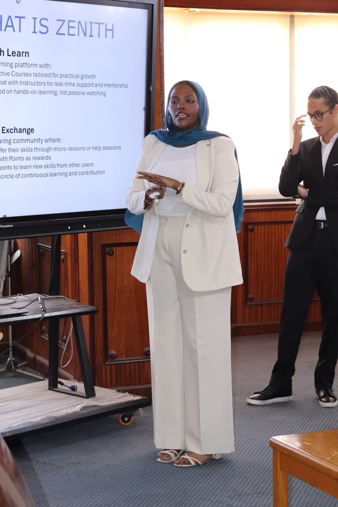

What I do
I work with Excel, Power BI, and SQL to clean datasets, analyze performance, track KPIs, and create structured reports and interactive dashboards.
My focus is on understanding the business question behind the data and presenting findings in a way that's clear, practical, and easy to act on.
With a background in real estate and business operations, I understand the importance of monitoring performance, identifying trends, and turning information into meaningful business insights.
I'm particularly interested in business performance analysis, project analytics, KPI tracking, and data visualization. I approach each project with attention to detail, logical thinking, and a commitment to delivering organized, understandable results.
Data Analyst with experience turning complex datasets into
actionable insights that drive product, marketing, and operational decisions.
I help businesses make better decisions by cleaning, analyzing, and visualizing their data.
My services include:
Data Cleaning & Preparation:** Organizing datasets, handling inconsistencies, and preparing data for reliable analysis.
Excel Reporting & Analysis:** Using formulas, pivot tables, and structured reports to summarize business performance.
Power BI Dashboards:** Creating interactive dashboards to track KPIs, compare performance, and visualize trends.
SQL Data Analysis:** Querying, filtering, and summarizing data to answer specific business questions.
Project & Performance Analytics:** Monitoring KPIs, analyzing trends, and highlighting performance gaps.
I focus on delivering clear reports, meaningful visualizations, and findings that connect directly to your business objectives.
Every project starts with understanding what you need to learn from your data. From there, I work toward an organized, accurate, and useful result.
My goal is : help you understand what your data is telling you, identify what deserves attention, and make more informed decisions.